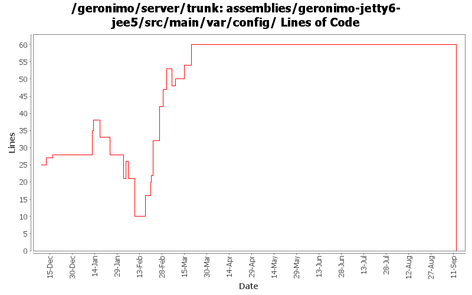

[root]/assemblies/geronimo-jetty6-jee5/src/main/var/config

| Author | Changes | Lines of Code | Lines per Change |
|---|---|---|---|
| Totals | 56 (100.0%) | 166 (100.0%) | 2.9 |
| dims | 8 (14.3%) | 56 (33.7%) | 7.0 |
| jdillon | 16 (28.6%) | 47 (28.3%) | 2.9 |
| djencks | 6 (10.7%) | 37 (22.3%) | 6.1 |
| gdamour | 8 (14.3%) | 13 (7.8%) | 1.6 |
| jbohn | 6 (10.7%) | 8 (4.8%) | 1.3 |
| dain | 3 (5.4%) | 2 (1.2%) | 0.6 |
| akulshreshtha | 1 (1.8%) | 2 (1.2%) | 2.0 |
| pmcmahan | 1 (1.8%) | 1 (0.6%) | 1.0 |
| rickmcguire | 1 (1.8%) | 0 (0.0%) | 0.0 |
| kevan | 4 (7.1%) | 0 (0.0%) | 0.0 |
| gawor | 1 (1.8%) | 0 (0.0%) | 0.0 |
| dblevins | 1 (1.8%) | 0 (0.0%) | 0.0 |
Rename jee5 bits to javaee5
0 lines of code changed in 6 files:
Fixed indent, use ${version} instead of ${pom.version}
15 lines of code changed in 3 files:
r6701@Bliss: jason | 2007-03-19 16:02:03 -0700
(GERONIMO-2980) Rename configs/activemq to configs/activemq-ra
1 lines of code changed in 1 file:
r6699@Bliss: jason | 2007-03-19 15:58:34 -0700
Use filtering to get ${pom.version} avoid avoid hardcoding versions
9 lines of code changed in 1 file:
GERONIMO-2958 MyFaces annotation support. Also clean up Module construction and remove unused method from ModuleBuilderExtension
4 lines of code changed in 1 file:
GERONIMO-2916 Make RarConfigurer available to DatabasePools portlet
2 lines of code changed in 1 file:
re-enable cxf. lots of thanks to cxf folks
0 lines of code changed in 1 file:
GERONIMO-2735 Property substitution in config.xml, using jexl expressions. Small example in the jetty config.xml
5 lines of code changed in 2 files:
Std props
9 lines of code changed in 3 files:
Disable cxf-deployer for now so default build of server starts (w/no extra magic) until cxf issues are resolved
9 lines of code changed in 1 file:
Fix for GERONIMO-2876 - Initial web service EJB support for Axis2
15 lines of code changed in 1 file:
GERONIMO-2865 Use defaultEnvironment instead of custom method to add dependencies to apps being deployed. Improve name of property setting jaxws implementation to use
13 lines of code changed in 1 file:
(GERONIMO-2858) Applied condition change from Jarek, only change to use props[''] syntax when default not needed
4 lines of code changed in 1 file:
Use jdillons' expression evaluation to switch between cxf and axis2 using a command line -Dorg.apache.geronimo.jaxwsimpl=cxf/axis2 property
2 lines of code changed in 1 file:
GERONIMO-2849 - service-ref app client test
GERONIMO-2850 - CXF: initial web service support for EJBs
10 lines of code changed in 1 file:
Second attempt to change the way the online/offline deployers and the JSR88
deployment driver work. The first attempt was breaking the TCK amd the
eclipse plugin.
Online deployer, i.e. deployer.jar, boots a Kernel to load its dependencies,
e.g. geronimo-deploy-tool, and registers the available ModuleConfigurers with
the DeploymentManager.
ModuleConfigurers to be registered are loaded by the persistent configuration
list jsr88-configurer-config.xml.
In the case of an offline deployment, the online deployer starts the
offline-deployer configuration within the same Kernel. In turn, the
offline-deployer configuration starts a list of configurations to register
the available module builders.
Add a log4j configuration for the online deployer.
DeploymentFactoryBootstrapper is the new JSR88 deployment driver. It boots a
kernel; starts the configuration list jsr88-configurer-config.xml; retrieves
the "actual" DeploymentFactory implementation from the kernel; and delegates
to this retrieved imoplementation.
The JSR88 JAR driver is now named jsr88-deploymentfactory.jar.
This fixes:
* GERONIMO-2794 - Improve online deployer to register ModuleConfigurers from the repository; and
* GERONIMO-2767 - Minimize side effects of the offline deployer
6 lines of code changed in 2 files:
Make the test case reflect the wsdl being used by adding other methods mentioned in the wsdl. added a xjc task in the pom.xml to generate the types needed for the fault. Ran the existing tests with both axis2 and cxf. Need to add more tests for the newly added methods.
4 lines of code changed in 1 file:
Ported Axis1 integration
0 lines of code changed in 1 file:
Revert deployer changes as they do break the Eclipse plugin and TCK.
I will investigate offline.
svn merge -r503370:503369 .
1 lines of code changed in 3 files:
Online deployer, i.e. deployer.jar, boots a Kernel to load its dependencies,
e.g. geronimo-deploy-tool, and registers the available ModuleConfigurers with
the DeploymentManager.
ModuleConfigurers to be registered are loaded by the persistent configuration
list jsr88-configurer-config.xml.
In the case of an offline deployment, the online deployer starts the
offline-deployer configuration within the same Kernel. In turn, the
offline-deployer configuration starts a list of configurations to register
the available module builders.
Add a log4j configuration for the online deployer.
This fixes:
* GERONIMO-2794 - Improve online deployer to register ModuleConfigurers from the repository; and
* GERONIMO-2767 - Minimize side effects of the offline deployer
6 lines of code changed in 3 files:
GERONIMO-2792 Assembly plans still contain references to non-existant corba-sun configs
0 lines of code changed in 1 file:
renamed ejb-ref builders
2 lines of code changed in 1 file:
Remove removed OpenEjbLocalRefBuilder
0 lines of code changed in 1 file:
Initial openejb3 integration
0 lines of code changed in 1 file:
remove tabs from the poms in assemblies, add a couple of entries in configs
7 lines of code changed in 1 file:
add Axis2Builder to the list of WebServiceBuilder(s)
7 lines of code changed in 1 file:
Fix for GERONIMO-2727 - Enable axis2-deployer in jetty and tomcat jee5 assemblies
7 lines of code changed in 1 file:
GERONIMO-2670 update assemblies to point at repository list for geronimo-2.0, plus update geronimo-plugin.xml files
to use ${version} instead of ${pom.currentVersion}
1 lines of code changed in 1 file:
GERONIMO-2668 help the axis deployer adjust to presence of other webservice deployers
13 lines of code changed in 1 file:
does not need to be enabled. should we get rid of it?
2 lines of code changed in 1 file:
enable both deployers on as per djencks - (http://www.nabble.com/Re%3A-JAX-WS-status-p7912083.html)
4 lines of code changed in 1 file:
GERONIMO-2642 - Now that context is working in Jetty re-enable the Geronimo Welcome App.
1 lines of code changed in 1 file:
reference should be to uddi-jetty6 rather than uddi-jetty in config.xml
1 lines of code changed in 1 file:
Update jsp-examples-jetty, ldap-demo-jetty, servlet-examples-jetty, and ca-helper-jetty for jetty6
Also update jetty assemblies to include remote-deploy-jetty and ca-helper-jetty (load=false) for consistency with Tomcat
Also fixed dependency in framework assembly
5 lines of code changed in 1 file:
Update Jetty minimal assembly for Jetty6
1 lines of code changed in 1 file:
GERONIMO-2642 Updates for Welcome app in Jetty6
Note: Welcome is set as load=false in config.xml due to what looks to be a jetty bug. When Welcome is running with context "/" it seems to break web console with context "/console" which results in 404 errors for web console.
0 lines of code changed in 2 files:
GERONIMO-2537 Some files still have old license headers. Update with new license headers. Also, some files were still mising headers
0 lines of code changed in 4 files: